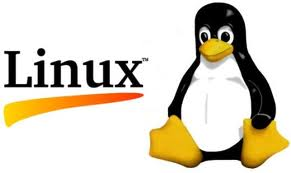

How computers work
christophe@pallier.org
Sep. 2013
An automaton can be described by a set of internal states and a transition table that associates events to transitions between states. They are also known as finite state machines.
Remarks:
Exercice: draw the transition diagram for a simple coffee machine with three states (off/on/brewing) and two buttons (switch on/off and brew)
Pattern recognition
!(Haha!)[images/fsa1.gif]
(see Regular Expressions)
A computer is basically an automaton with an additonal memory store.
Examples:
A finite state machine augmented with a tape and a mechanism to read/write onit.
See (https://en.wikipedia.org/wiki/Turing_machine)[https://en.wikipedia.org/wiki/Turing_machine] for more information.
- The first computers were not programmable. They were hardwired!
- Programmable computer:
- a program is a set of instructions stored in memory.
- Loaded and executed by a processor.
- Such programs are written in machine langage (the language of the processor)
Programs in higher-level languages (rather than Machine language) can be either * compiled, or * interpreted
In both cases, you write the program as textual files.
A compiler translates the program into an executable file in machine language. The exectutable file is standalone.
An interpreter reads the file and execute the commands one by one. It is slower, but easier to interact with. Disatvange: you need the interpreter at all time.
An O.S. is the first program that loads into the computer during the boot. When running:
it controls the hardware (screen/printer/disk/keybord/mouse,…) (drivers)
- it manages all the other programs (processes/tasks/applications).
- sharing memory
- allocating processors and cores
- allocating time
Check out Task Manager (Windows)/System Monitor (Linux)/ Activity Monitor (Mac)
 |
 |
 |
Different OS offer different “views” of the computer (e.g. 1 button mouse in Mac, 2 in Windows, 3 in Linux), so often programs are designed to work on one OS (bad!). Prefer multiplatform software (like Python).
Several OS can be installed in a given machine: - choice at boot (multiboot) - an OS can run inside a virtual machine, that is a program running in another (or the same) OS, and emulating a full computer.
Terminal (or console): originaly, a device comprising a keyboard and screen, allowing a human to interact with a computer.
Notes:
early computers had no keyboard, no screen. The input was done through punched cards and output would be printed out).
in the mainframe era, many terminals were connected to a single, powerful, computer. Everybody was sharing the same computer.
With the advent of Personal Computers, the terminal and the computer became a single apparatus.
However, terminals can be virtual. Terminals are programs that let you run text programs. You interact by typing and displaying text. No graphical interface/no mouse.
Shell: a software that provides a way to interact with the operating system.
Graphical shells. Windows/Icons/Menus … Limited but ‘intuitive’
Textual shells (command lines). More powerful. It reads in commands and executes them. It can provide variables, loops,…, to facilitate automation of tasks. It provides a better control of the machine/better at automating tasks
See Wikipedia Shell_(Computing)
Windows: cmd/powershell. Mac/linux:bash/tsch…
Example (creating 20 directories in one command)
for f in 01 02 03 04 05 06 07 08 09 10; do mkdir -p subject_$f/data subject_$f/results; done
for f in 1 2 3 4 5: do python myprog.py $f ; done
Is it worth learning to use a textual shell today? Probably, BUT you can handle 90% of problems with Python.
Most computers (not all) have two kinds of memories: - volatile, fast, memory, which is cleared when the computer is switched off (caches, RAM) - ‘permanent’, slow, memory, which is not erased when the computer is switched off (DISKS)
The unit of storage is the file.
Files are nothing but blobs of bits stored “sequentially” on disks. A first file could be stored between location 234 and 256, a second file could be stored at location 456.
To access a file, one would need to know its location on the disk. To simplify users’s life, OSes provide a system of “pointers”, filenames.
To help users further, filenames are organised in a hierarchical structure (a tree) of directories (or folders).
So to locate a file, you must know - the disk (C:, D:, … in Windows only) - its location in the directory structure - its name
(note: a given file can have several names: cf. links)
Absolute pathnames vs. relative pathnames (..)
working directory A running program has a. Filenames can be relative to this directory.
Open python
import os
os.getcwd()
os.chdir('..')
os.getcwd()
Automaton: states/transitions.
Computer: states/transition + memory (Turing machine)
First computer were not programmable. They were wired!
Programmable computer: programs=set of instructions stored in memory. Loaded and executed by a processor. Programs are written in machine langage (the language of the processor)
Programs in higher-level languages can be either * compiled, or * interpreted
In both cases, you write the program as textual files.
A compiler translates the program into an executable file in machine language. The exectutable file is standalone.
An interpreter reads the file and execute the commands one by one. It is slower, but easier to interact with. Disatvange: you need the interpreter at all time.
A set of new functions that extend a language (.DLL (Windows);.a or .so (Linux); framework bundles (MacOs))
Dynamic libraries can be used simultaneously by several processes.
Eg. the function @@sqrt@@ can be defined once, and called by several programs, saving memory.
In Python, use @@import library
import math
math.srqt(2)